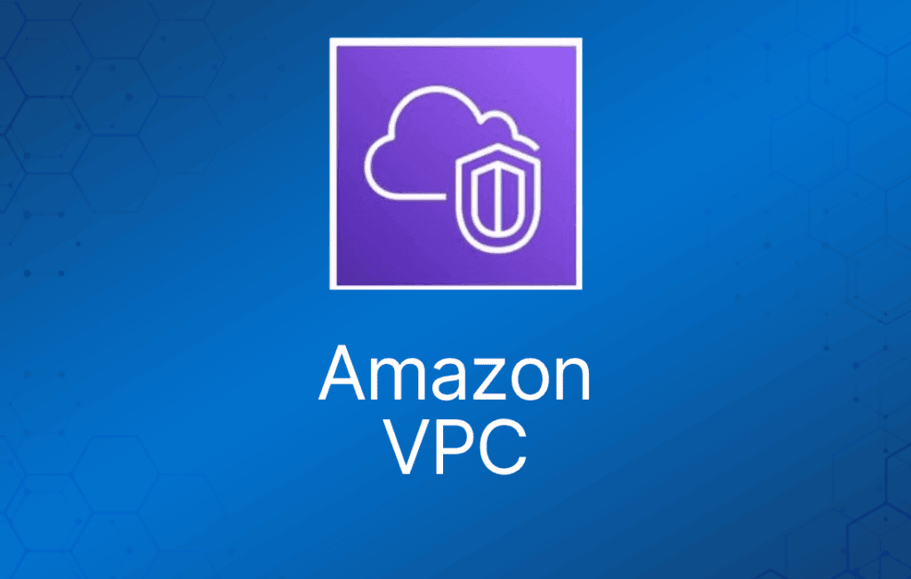
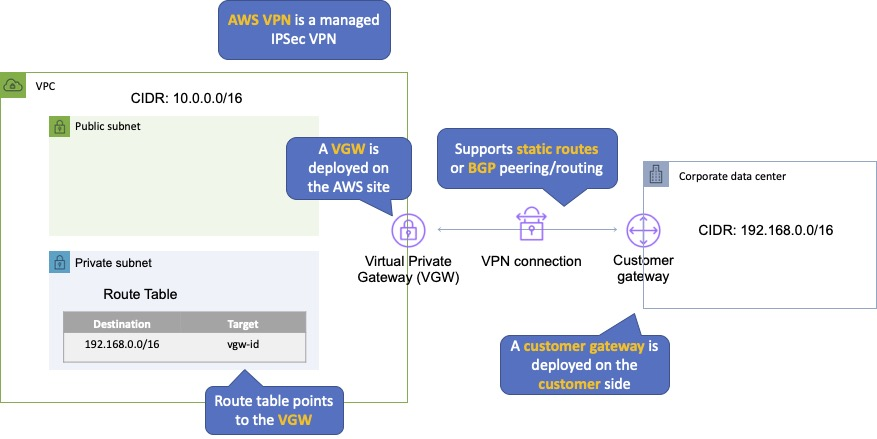
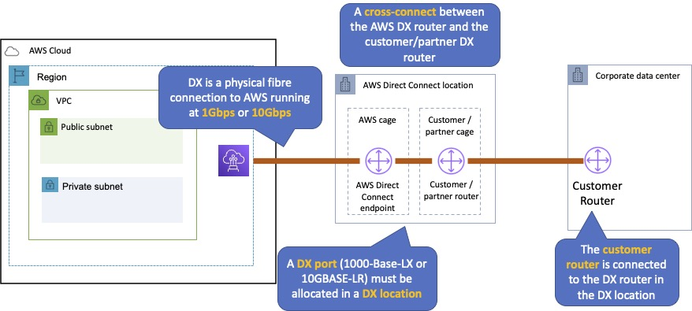
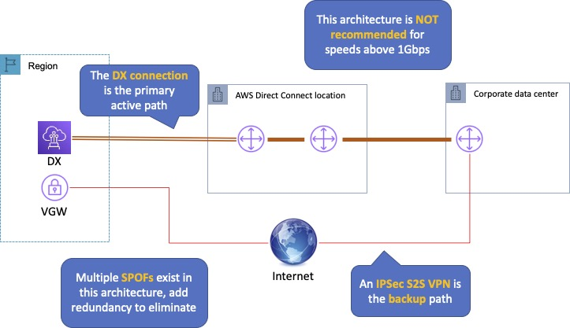
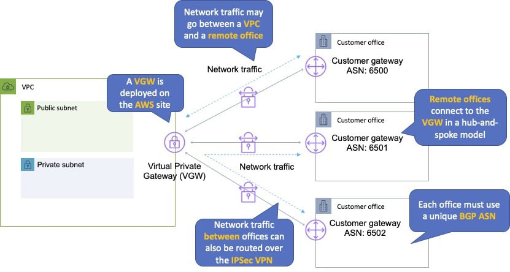

Amazon VPC 让你能够在 Amazon Web Services (AWS) 云中预置一个逻辑隔离的区域，在你自己定义的虚拟网络中启动 AWS 资源。
类似于在 AWS 内部拥有自己的数据中心。
提供对虚拟网络环境的完全控制，包括 IP 地址范围的选择、subnet 的创建，以及 route table 和 gateway 的配置。
VPC 与 AWS 上的其他 VPC 在逻辑上是隔离的。
可以使用硬件 VPN（site-to-site）将企业数据中心连接到 VPC。
VPC 是区域级（region-wide）的。
每个区域都会创建一个默认 VPC，每个 AZ 中都有一个 subnet。
默认情况下，每个区域最多可以创建 5 个 VPC。
你可以为 VPC 定义 dedicated tenancy，以确保实例启动在专用硬件上（会覆盖启动时指定的配置）。
当首次预置 Amazon EC2 资源时，系统会为每个 AWS 账户自动创建一个默认 VPC。
默认 VPC 中的 subnet 全是公有 subnet。
公有 subnet 是指满足以下条件的 subnet：
- “Auto-assign public IPv4 address”设置为“Yes”。
- subnet 的 route table 关联了 Internet Gateway。
默认 VPC 中的实例始终同时拥有公有和私有 IP 地址。
AZ 名称对不同用户映射到不同的物理区域（即 AZ“ap-southeast-2a”对不同用户可能映射到不同的物理区域）。
VPC 的组成部分：
- Virtual Private Cloud：AWS 云中一个逻辑隔离的虚拟网络。你可以从选定的范围中定义 VPC 的 IP 地址空间。
- Subnet：VPC IP 地址范围中的一个分段，用于放置成组的隔离资源（与 AZ 一一对应）。
- Internet Gateway：VPC 一侧连接公共 Internet 的组件。
- NAT Gateway：一项高可用的托管网络地址转换（NAT）服务，供私有 subnet 中的资源访问 Internet。
- Hardware VPN Connection：Amazon VPC 与你的数据中心、家庭网络或托管机房之间的基于硬件的 VPN 连接。
- Virtual Private Gateway：VPN 连接在 Amazon VPC 一侧的端点。
- Customer Gateway：VPN 连接在你这一侧的端点。
- Router：路由器连接各个 subnet，并在 Internet gateway、virtual private gateway、NAT gateway 和 subnet 之间转发流量。
- Peering Connection：peering 连接让你能够通过私有 IP 地址在两个对等 VPC 之间路由流量。
- VPC Endpoint：无需使用 Internet Gateway、VPN、网络地址转换（NAT）设备或防火墙代理，即可从 VPC 内部私有连接到托管在 AWS 上的服务。
- Egress-only Internet Gateway：一种有状态网关，为 IPv6 流量提供仅从 VPC 到 Internet 的出站访问。
连接到 VPC 的方式有：
- 基于硬件的 VPN。
- Direct Connect。
- VPN CloudHub。
- 软件 VPN。
想动手学习如何创建 VPC？在下面的 AWS Hands-On Labs 视频教程中，我们将向你展示如何在 AWS 上创建自定义 Amazon Virtual Private Cloud (VPC)。你还将学习如何创建 subnet、route table 和 Internet Gateway。我们会向新 VPC 中启动一些 EC2 实例并测试连通性。
路由
VPC 路由器在区域内各 AZ 之间执行路由。
VPC 路由器将不同的 AZ 连接在一起，并将 VPC 连接到 Internet Gateway。
每个 subnet 都有一个 route table，路由器根据它在 VPC 内转发流量。
route table 中也有指向外部目的地的条目。
每个 VPC 最多 200 个 route table。
每个 route table 最多 50 条路由条目。
每个 subnet 只能关联一个 route table。
一个 route table 可以分配给多个 subnet。
如果没有指定 route table，subnet 在创建时会被分配到主 route table。
主 route table 不能被删除。
你可以手动将另一个 route table 设置为主 route table。
有一条默认规则允许 VPC 内所有 subnet 相互通信——该规则不能被删除或修改。
由于这条规则，subnet 之间的路由总是可行的——如果出现通信问题，更可能是 security group 或 NACL 的问题。
Subnet 与 Subnet 规模规划
subnet 的类型：
- 如果 subnet 的流量被路由到 internet gateway，该 subnet 称为公有 subnet。
- 如果 subnet 没有通往 internet gateway 的路由，该 subnet 称为私有 subnet。
- 如果 subnet 没有通往 internet gateway 的路由，但其流量被路由到用于 VPN 连接的 virtual private gateway，该 subnet 称为仅 VPN subnet（VPN-only subnet）。
VPC 创建时带有一个主地址范围（CIDR 块，可以是 16-28 位之间的任意值），subnet 范围在该范围内创建。
新 subnet 总是关联到默认 route table。
VPC 创建后无法更改 CIDR 块。
你无法创建与现有 CIDR 块重叠的附加 CIDR 块。
你无法在不同的 RFC 1918 范围内创建附加 CIDR 块。
无法创建 IP 地址范围重叠的 subnet。
subnet 中前 4 个和最后 1 个 IP 地址是保留的。
subnet 创建在可用区（AZ）内。
每个 subnet 必须完全位于一个可用区内，不能跨区。
可用区是相互独立的位置，在设计上与其他可用区的故障隔离。
可用区之间通过低延迟、高吞吐、高冗余的网络连接。
可以创建私有、公有或 VPN subnet。
subnet 与 AZ 一一对应，不能跨 AZ。
一个自定义 VPC 只能挂载一个 Internet gateway。
IPv6 地址全是公有的，地址范围由 AWS 分配。
建议使用 RFC 1918 中指定的私有 IP 范围：
- 10.0.0.0 – 10.255.255.255（10/8 前缀）
- 172.16.0.0 – 172.31.255.255（172.16/12 前缀）
- 192.168.0.0 – 192.168.255.255（192.168/16 前缀）
不过，也可以使用可公网路由的 CIDR 块创建 VPC。
允许的块大小在 /28 掩码到 /16 掩码之间。
VPC 内各 subnet 的 CIDR 块不能重叠。
每个 subnet CIDR 块中的前四个 IP 地址和最后一个 IP 地址不可供你使用。
例如，在 CIDR 块为 10.0.0.0/24 的 subnet 中，以下五个 IP 地址是保留的：
- 10.0.0.0：网络地址。
- 10.0.0.1：由 AWS 保留给 VPC 路由器。
- 10.0.0.2：由 AWS 保留。
- 10.0.0.3：由 AWS 保留以备将来使用。
- 10.0.0.255：网络广播地址（不支持广播）。
更多信息请查阅这篇 AWS 文章。
Internet Gateway
Internet Gateway 是一种水平扩展、冗余且高可用的 VPC 组件，允许 VPC 中的实例与 Internet 通信。
Internet Gateway 有两个用途：
- 在 VPC 的 route table 中为可路由到 Internet 的流量提供目标。
- 为分配了公有 IPv4 地址的实例执行网络地址转换（NAT）。
Internet Gateway（IGW）必须先创建，然后挂载到 VPC，添加到 route table，再关联到相关 subnet。
没有可用性风险或带宽限制。
如果你的 subnet 关联了通往 Internet 的路由，那它就是公有 subnet。
一个 VPC 中不能有多个 Internet Gateway。
IGW 是水平扩展、冗余且高可用的。
IGW 在私有和公有 IPv4 地址之间执行 NAT。
IGW 支持 IPv4 和 IPv6。
IGW 必须先分离（detach）才能删除。
同一时间只能将一个 IGW 挂载到一个 VPC。
网关术语：
- Internet gateway（IGW）——AWS VPC 一侧连接公共 Internet 的组件。
- Virtual private gateway（VPG）——AWS 一侧的 VPC 端点。
- Customer gateway（CGW）——连接的客户一端的表示。
要让 VPC subnet 中的实例能够访问 Internet 或被 Internet 访问，你必须执行以下操作：
- 为 VPC 挂载一个 Internet Gateway。
- 确保 subnet 的 route table 指向 Internet Gateway（见下文）。
- 确保 subnet 中的实例拥有全局唯一的 IP 地址（公有 IPv4 地址、Elastic IP 地址或 IPv6 地址）。
- 确保 network access control 和 security group 规则允许相关流量进出实例。
必须更新 subnet 的 route table 以指向 IGW，可以是：
- 指向所有目的地，例如 IPv4 的 0.0.0.0/0 或 IPv6 的 ::/0。
- 指向特定的公有 IPv4 地址，例如你公司在 AWS 之外的公有终端节点。
Egress-only Internet Gateway（仅出站互联网网关）：
- 为使用 IPv6 地址的实例提供出站 Internet 访问。
- 阻止对这些 IPv6 实例的入站访问。
- IPv6 地址全局唯一，因此默认即为公有。
- 有状态——将流量从实例转发到 Internet，然后把响应送回。
- 必须创建一条指向 Egress-Only Internet Gateway 的 ::/0 自定义路由。
- IPv6 场景使用 Egress-Only Internet Gateway 而非 NAT。
VPC 向导
VPC with a Single Public Subnet（带单个公有 subnet 的 VPC）：
- 你的实例运行在 AWS 云中一个私有、隔离的区域，可直接访问 Internet。
- 可以使用 network access control list 和 security group 严格控制进出实例的网络流量。
- 创建一个 /16 网络和一个 /24 subnet。公有 subnet 实例使用 Elastic IP 或公有 IP 访问 Internet。
VPC with Public and Private Subnets（带公有和私有 subnet 的 VPC）：
- 除了包含公有 subnet 外，此配置还增加了一个私有 subnet，其中的实例无法从 Internet 寻址。
- 私有 subnet 中的实例可以通过公有 subnet 使用网络地址转换（NAT）建立到 Internet 的出站连接。
- 创建一个 /16 网络和两个 /24 subnet。
- 公有 subnet 实例使用 Elastic IP 访问 Internet。
- 私有 subnet 实例通过网络地址转换（NAT）访问 Internet。
VPC with Public and Private Subnets and Hardware VPN Access（带公有、私有 subnet 和硬件 VPN 访问的 VPC）：
- 此配置在 Amazon VPC 与数据中心之间增加了一条 IPsec 虚拟专用网络（VPN）连接——实际上将你的数据中心扩展到了云端，同时 Amazon VPC 中公有 subnet 的实例仍可直接访问 Internet。
- 创建一个 /16 网络和两个 /24 subnet。
- 一个 subnet 直接连接 Internet，另一个 subnet 通过 IPsec VPN 隧道连接到你的企业网络。
VPC with a Private Subnet Only and Hardware VPN Access（仅私有 subnet 且带硬件 VPN 访问的 VPC）：
- 你的实例运行在 AWS 云中一个私有、隔离的区域，私有 subnet 中的实例无法从 Internet 寻址。
- 你可以通过 IPsec 虚拟专用网络（VPN）隧道将此私有 subnet 连接到你的企业数据中心。
- 创建一个 /16 网络和一个 /24 subnet，并在 Amazon VPC 与你的企业网络之间预置一条 IPsec VPN 隧道。
NAT 实例
NAT 实例由你管理。
用于让私有 subnet 中的实例访问 Internet。
NAT 实例必须位于具有通往 Internet Gateway 路由的公有 subnet 中。
私有 subnet 中的私有实例必须有通往 NAT 实例的路由，通常是默认路由目标 0.0.0.0/0。
创建 NAT 实例时，务必禁用实例上的 source/destination check。
NAT 实例必须位于单个公有 subnet 中。
NAT 实例需要分配到 security group。
NAT 实例的 security group 必须允许来自私有 subnet 的 HTTP/HTTPS 入站流量和到 0.0.0.0/0 的出站流量。
需要有从私有 subnet 到 NAT 实例的路由，NAT 才能工作。
NAT 实例能承载的流量取决于实例类型。
使用 NAT 实例可能成为瓶颈（不具备高可用）。
可以通过使用 Auto Scaling group、不同 AZ 中的多个 subnet 以及自动化故障转移脚本来实现高可用。
性能取决于实例规格。
可以通过升级实例规格或使用增强联网（enhanced networking）来扩展。
可以通过在多个 subnet 中使用多个 NAT 进行横向扩展。
可用作堡垒机（bastion/jump host）。
可以监控流量指标。
不支持 IPv6（请使用 Egress-Only Internet Gateway）。
NAT Gateway
NAT gateway 由 AWS 为你管理。
完全托管的 NAT 服务，取代了在 EC2 上运行 NAT 实例的需求。
必须在公有 subnet 中创建。
公有 IP 使用 Elastic IP 地址。
私有 subnet 中的私有实例必须有通往 NAT 实例的路由，通常是默认路由目标 0.0.0.0/0。
在指定的 AZ 中创建，并在该区内具备冗余。
要实现跨 AZ 冗余，请在每个 AZ 中创建 NAT Gateway，并为私有 subnet 配置使用本 AZ 网关的路由。
带宽最高 5 Gbps，可扩展到 45 Gbps。
不能使用 NAT Gateway 访问 VPC peering、VPN 或 Direct Connect，因此请务必在 route table 中为这些目标添加专门的路由。
NAT gateway 在其部署的每个 AZ 内都是高可用的。
企业更倾向于使用它。
无需打补丁。
不关联任何 security group。
自动分配公有 IP 地址。
记得更新 route table 并指向你的网关。
更安全（例如无法通过 SSH 访问，也没有需要维护的 security group）。
无需禁用 source/destination check。
Egress-only internet gateway 用于 IPv6，而 NAT gateway 用于 IPv4。
不支持端口转发（port forwarding）。
不支持将 NAT Gateway 用作堡垒机。
不支持流量指标。
下表列出了两种网关的关键区别：
| NAT Gateway | NAT 实例 | |
| 管理方 | 由 AWS 管理 | 自行管理 |
| 可用性 | 在 AZ 内高可用 | 不高可用（需要脚本实现） |
| 带宽 | 最高 45 Gbps | 取决于所选 EC2 实例的带宽 |
| 维护 | 由 AWS 管理 | 由你管理 |
| 性能 | 为 NAT 优化 | 配置为执行 NAT 的 Amazon Linux 2 AMI |
| 公有 IP | Elastic IP 不可分离 | Elastic IP 可分离 |
| Security Group | 不能关联 security group | 可以关联 security group |
| 堡垒机 | 不支持 | 可用作堡垒机 |
Security Group
security group 的作用相当于实例级别的防火墙。
具体来说，security group 工作在网络接口（network interface）级别。
security group 中只能添加允许（permit）规则，不能添加拒绝（deny）规则。
security group 末尾有一条隐式拒绝规则。
评估所有规则，直到遇到允许规则，否则一直评估到隐式拒绝。
可以控制入站和出站流量。
security group 是有状态的。
默认情况下，自定义 security group 没有任何入站允许规则（默认拒绝所有入站流量）。
默认情况下，default security group 有入站允许规则（允许来自组内的流量）。
自定义和默认 security group 默认都允许所有出站流量。
你无法删除 VPC 中默认创建的 security group。
你可以将 security group 名称用作其他 security group 中的源或目标。
你可以将 security group 自身的名称用作其入站规则的源。
security group 成员可以位于 VPC 内的任何 AZ 或 subnet。
实例运行时也可以更改 security group 成员关系。
任何更改都会立即生效。
每个 EC2 实例接口最多可添加 5 个 security group。
一个 security group 内的 EC2 实例数量没有限制。
你无法使用 security group 封禁特定 IP 地址，请改用 NACL。
网络 ACL（Network ACL）
网络 ACL 在 subnet 级别起作用。
网络 ACL 功能由 VPC 路由器承载。
NACL 可以有允许和拒绝规则。
网络 ACL 包含一个编号规则列表，按编号从小到大依次评估，直到显式拒绝。
建议在网络 ACL 编号之间留出间隔。
网络 ACL 有独立的入站和出站规则，每条规则可以允许或拒绝流量。
网络 ACL 是无状态的，因此响应流量要受对应方向规则的约束。
NACL 只适用于进出 subnet 的流量，不适用于 subnet 内部的流量。
VPC 自动附带一个默认网络 ACL，允许所有入站/出站流量。
自定义 NACL 默认拒绝所有入站和出站流量。
所有 subnet 都必须关联一个网络 ACL。
你可以创建自定义网络 ACL。默认情况下，每个自定义网络 ACL 拒绝所有入站和出站流量，直到你添加规则。
VPC 中的每个 subnet 都必须关联一个网络 ACL。如果你不手动关联，它将关联到默认网络 ACL。
一个网络 ACL 可以关联多个 subnet；但一个 subnet 同一时间只能关联一个网络 ACL。
网络 ACL 不过滤同一 subnet 内实例之间的流量。
NACL 是封禁特定 IP 或 IP 段的首选方案。
security group 不能用于封禁特定 IP 段。
NACL 是第一道防线，security group 是第二道。
还建议在实例上安装软件防火墙。
NACL 的更改立即生效。
| Security Group | Network ACL |
| 工作在实例（接口）级别 | 工作在 subnet 级别 |
| 仅支持允许规则 | 支持允许和拒绝规则 |
| 有状态 | 无状态 |
| 评估所有规则 | 按顺序处理规则 |
| 仅当实例关联了组时才应用 | 自动应用于所关联 subnet 中的所有实例 |
VPC 连接方式
连接到 VPC 有多种方式，包括：
- AWS Managed VPN。
- AWS Direct Connect。
- AWS Direct Connect 加 VPN。
- AWS VPN CloudHub。
- 软件 VPN。
- Transit VPC。
- VPC Peering。
- AWS PrivateLink。
- VPC Endpoint。
下面将逐一详细介绍。
AWS Managed VPN
| 是什么 | AWS 提供的两个 VPC 之间的网络连接 |
| 何时用 | 多个 VPC 需要相互通信或访问彼此资源 |
| 优点 | 使用 AWS 骨干网，不经过公共互联网 |
| 缺点 | 不支持传递性对等（transitive peering） |
| 如何实现 | 发起 VPC Peering 请求；接受方接受请求（可在同一账户或跨账户） |
VPN 部署快速、简单且经济实惠。
AWS 一侧需要 Virtual Private Gateway（VGW）。
客户一侧需要 Customer Gateway。
下图展示了 AWS S2S VPN 的配置：

customer gateway 需要一个可在 Internet 上路由的 IP 地址。
每条连接必须配置两条隧道以实现冗余。
通过 VPN 进入的客户端不能使用 AWS 中的 NAT gateway。
要实现路由传播，需要将仅 VPN subnet 的 route table 指向 VGW。
必须定义可以通过 VGW 收发流量的 IP 前缀。
VGW 不会路由目的地超出所接收 BGP 通告、静态路由条目或其挂载 VPC CIDR 范围的流量。
无法通过 VPN 访问 VPC 上的 Elastic IP——Elastic IP 只能通过 Internet 连接。
AWS Direct Connect
| 是什么 | 通过专线直连 AWS 骨干网的专用网络连接 |
| 何时用 | 需要大带宽链路接入 AWS；AWS 上为企业用户提供大量资源和服务 |
| 优点 | 网络性能更可预测；可能降低带宽成本；最高 10 Gbps 预置连接；支持 BGP 对等和路由 |
| 缺点 | 可能需要额外的电信运营商和托管提供商关系和/或网络线路；成本高 |
| 如何实现 | 与现有数据网络提供商合作；创建虚拟接口（VIF）连接 VPC（私有 VIF）或其他 AWS 服务如 S3 或 Glacier（公有 VIF） |
AWS Direct Connect 可以轻松建立从本地网络到 Amazon VPC 的专用连接。
使用 AWS Direct Connect，你可以在 AWS 与数据中心、办公室或托管环境之间建立私有连接。
这种私有连接可以降低网络成本、提高带宽吞吐，并提供比基于互联网的连接更稳定的网络体验。
AWS Direct Connect 允许你在 AWS 网络与某个 AWS Direct Connect 站点之间建立 1 Gbps 或 10 Gbps 的专用网络连接（或多条连接）。
它使用行业标准 VLAN，通过私有 IP 地址访问运行在 Amazon VPC 内的 Amazon Elastic Compute Cloud (Amazon EC2) 实例。
AWS Direct Connect 不加密传输中的流量。
你可以为经过 AWS Direct Connect 的服务使用相应的加密选项。
下图展示了 AWS Direct Connect 的配置：

AWS Direct Connect 加 VPN
| 是什么 | 在专线（Direct Connect）上建立 IPSec VPN 连接 |
| 何时用 | 需要在 Direct Connect 之上增加加密隧道的安全性 |
| 优点 | （理论上）比单独的 Direct Connect 更安全 |
| 缺点 | VPN 层带来更多复杂度 |
| 如何实现 | 与现有数据网络提供商合作 |
使用 AWS Direct Connect 加 VPN，你可以将一条或多条 AWS Direct Connect 专用网络连接与 Amazon VPC VPN 结合起来。
这种组合提供 IPsec 加密的私有连接，同时降低网络成本、提高带宽吞吐，并提供比基于互联网的 VPN 连接更稳定的网络体验。
你可以使用 AWS Direct Connect 建立你的网络与公有 AWS 资源（例如 Amazon virtual private gateway IPsec 终端节点）之间的专用网络连接，创建逻辑连接。
该方案将 VPN 方案的 AWS 托管优势与 AWS Direct Connect 方案的低延迟、更高带宽、更稳定的优势结合起来，并提供端到端的安全 IPsec 连接。
下图展示了 AWS Direct Connect 加 VPN 的配置：

AWS VPN CloudHub
| 是什么 | 使用 AWS Virtual Private Gateway 以中心辐射（hub and spoke）方式连接各站点 |
| 何时用 | 将远程办公室互联，作为主用或备用 WAN 访问 AWS 资源及彼此互联 |
| 优点 | 复用现有 Internet 连接；支持用 BGP 路由引导流量 |
| 缺点 | 依赖 Internet 连接；没有内建冗余 |
| 如何实现 | 为一个 Virtual Private Gateway 分配多个 Customer Gateway，各自使用自己的 BGP ASN 和唯一 IP 范围 |
AWS VPN CloudHub 采用简单的中心辐射模型，可以在有或没有 VPC 的情况下使用。
如果你有多个分支机构和现有互联网连接，并希望实现一种便捷、可能低成本的中心辐射模型，用于这些远程办公室之间的主用或备用连接，可以使用这种设计。
VPN CloudHub 用于基于硬件的 VPN，允许你将各分支机构接入一个 VPC，再将其连接到企业数据中心（以 AWS 为中心的中心辐射拓扑）。
默认情况下，一个 VGW 上最多可以有 10 条 IPSec 隧道。
使用 eBGP。
各分支机构之间可以互相通信（并提供冗余）。
可以有 Direct Connect 连接。
按小时费率加数据出站费用计费。
下图展示了 AWS VPN CloudHub 的配置：

软件 VPN
| 是什么 | 你必须自己提供端点和软件 |
| 何时用 | 出于合规原因必须自己管理 VPN 连接两端，或想使用 AWS 不支持的 VPN 方案 |
| 优点 | 最大的灵活性和可管理性 |
| 缺点 | 你必须自己为整条链路设计所需的冗余 |
| 如何实现 | 在 EC2 实例上通过 Marketplace 安装 VPN 软件 |
Amazon VPC 允许你通过创建远程网络与运行在 Amazon VPC 网络中的软件 VPN 设备之间的 VPN 连接，完全自主管理 Amazon VPC 连接的两端，提供了这种灵活性。
如果出于合规目的必须自行管理 VPN 连接的两端，或想利用 Amazon VPC VPN 方案目前不支持的网关设备，建议使用此选项。
Transit VPC
| 是什么 | 连接地理上分散的 VPC 和站点以创建全球网络中转中心的常用策略 |
| 何时用 | 跨多个区域的站点和 VPC 部署的资产需要相互通信 |
| 优点 | 最大的灵活性和可管理性，同时也是 AWS 托管的 VPN 中心辐射（VPC 之间） |
| 缺点 | 你必须自己为整条链路设计冗余 |
| 如何实现 | Cisco、Juniper Networks 和 Riverbed 等厂商提供与其设备和 AWS VPC 配合的方案 |
在上面提到的软件 VPN 设计基础上，你可以在 AWS 上创建一个全球中转网络。
transit VPC 是连接多个地理上分散的 VPC 和远程网络以创建全球网络中转中心的常用策略。
transit VPC 简化了网络管理，并最大限度地减少了连接多个 VPC 和远程网络所需的连接数量。
VPC Peering
| 是什么 | AWS 提供的 VPC 之间的网络连接 |
| 何时用 | 多个 VPC 需要相互连接并访问彼此资源 |
| 优点 | 使用 AWS 骨干网，不经过互联网 |
| 缺点 | 不支持传递性对等（transitive peering） |
| 如何实现 | 发起 VPC Peering 请求；接受请求（可在同一账户或跨账户） |
VPC peering 连接是两个 VPC 之间的网络连接，让你能够使用私有 IPv4 地址或 IPv6 地址在它们之间路由流量。
两个 VPC 中的实例可以像在同一个网络中一样相互通信。
你可以在自己的 VPC 之间创建 VPC peering 连接，也可以与另一个 AWS 账户中的 VPC 创建。
两个 VPC 可以位于不同区域（也称为跨区域 VPC peering 连接）。
在不同区域的 VPC 之间发送的数据是加密的（收取流量费用）。
跨区域 VPC peering 有一些限制：
- 无法创建引用对端 security group 的 security group 规则。
- 无法启用 DNS 解析。
- 最大 MTU 为 1500 字节（不支持 jumbo frame）。
- 区域支持有限。
AWS 使用 VPC 的现有基础设施来创建 VPC peering 连接。
它既不是网关也不是 VPN 连接，不依赖单独的物理硬件。
通信没有单点故障，也没有带宽瓶颈。
VPC peering 连接帮助你实现数据传输。
任意两个 VPC 之间同一时间只能有一条 peering 连接。
可以与其他账户对等（区域内或跨区域）。
CIDR 范围不能重叠。
VPC peering 连接是两个 VPC 之间的一对一关系。
你可以为每个拥有的 VPC 创建多条 VPC peering 连接，但不支持传递性对等关系。
你的 VPC 与未直接对等的 VPC 之间不存在任何对等关系。
限制为每个 VPC 50 个对等连接，可申请提升至 125 个。
支持 DNS。
必须更新 route table 以配置路由。
必须更新 VPC security group 的入站和出站规则，以引用对端 VPC 中的 security group。
与另一个账户创建 VPC peering 连接时，需要输入对方账户的账户 ID 和 VPC ID。
需要在对端 VPC 中接受待处理的访问请求。
VPC peering 连接可以添加到 route table——显示为以“pcx-”开头的目标。
AWS PrivateLink
AWS PrivateLink 通过消除数据在公共 Internet 上的暴露，简化了与云端应用共享数据的安全性。
AWS PrivateLink 在 Amazon 网络上安全地提供 VPC、AWS 服务和本地应用之间的私有连接。
AWS PrivateLink 让跨不同账户和 VPC 连接服务变得简单，显著简化了网络架构。
下表提供了关于 AWS PrivateLink 及何时使用它的更多信息：
| 是什么 | AWS 提供的、使用 interface endpoint 在 VPC 和/或 AWS 服务之间的连接 |
| 何时用 | 使用 AWS 骨干网而非公共互联网，让私有 subnet 保持真正的私有 |
| 优点 | 冗余；使用 AWS 骨干网 |
| 缺点 | |
| 如何实现 | 在所有需要的 subnet 中为所需的 AWS 或 Marketplace 服务创建 endpoint；通过提供的 DNS 主机名访问 |
考试提示：要知道 AWS PrivateLink 和 ClassicLink 的区别。ClassicLink 允许你将 EC2-Classic 实例链接到同一区域内你账户中的 VPC。EC2-Classic 是 VPC 出现之前的旧平台，2013 年 12 月之后创建的账户不可用。但 ClassicLink 可能会作为（错误的）备选答案出现在考试题中，所以你需要知道它是什么。
VPC Endpoint
Interface endpoint 使用 AWS PrivateLink，是一个带私有 IP 地址的弹性网络接口（ENI），作为发往受支持服务的流量的入口。
使用 PrivateLink，你可以将 VPC 连接到受支持的 AWS 服务、其他 AWS 账户托管的服务（VPC endpoint service）以及受支持的 AWS Marketplace 合作伙伴服务。
通过跨区域 VPC Peering 访问 AWS PrivateLink：
- AWS VPC 中的应用可以使用跨区域 VPC Peering 安全地访问其他 AWS 区域的 AWS PrivateLink endpoint。
- AWS PrivateLink 让你能够以高可用、可扩展的方式私有访问托管在 AWS 上的服务，无需使用公有 IP，也无需让流量经过 Internet。
- 即使服务端点位于不同的 AWS 区域，客户也可以私有地连接到该服务。
- 使用跨区域 VPC Peering 的流量始终留在 AWS 全球骨干网上，绝不经过公共 Internet。
gateway endpoint 是一种网关，作为 route table 中指定路由的目标，用于发往受支持的 AWS 服务的流量。
interface VPC endpoint（interface endpoint）让你能够连接到由 AWS PrivateLink 支持的服务。
下表列出了两种 endpoint 的关键信息：
| Interface Endpoint | Gateway Endpoint | |
| 是什么 | 带私有 IP 的弹性网络接口 | 作为特定路由目标的网关 |
| 如何工作 | 使用 DNS 条目重定向流量 | 在 route table 中使用前缀列表（prefix list）重定向流量 |
| 支持哪些服务 | 大量 AWS 服务，完整列表请点击此链接 | Amazon S3、DynamoDB |
| 安全控制 | Security Group | VPC Endpoint Policy |
默认情况下，IAM 用户没有操作 endpoint 的权限。
你可以创建 IAM 用户策略，授予用户创建、修改、描述和删除 endpoint 的权限。
有一长串服务受 interface endpoint 支持。
gateway endpoint 仅适用于：
- Amazon DynamoDB
- Amazon S3
考试提示：要知道哪些服务使用 interface endpoint，哪些使用 gateway endpoint。最简单的记忆方法是：Gateway Endpoint 只用于 Amazon S3 和 DynamoDB。
共享服务 VPC
你可以允许其他 AWS 账户将其应用资源（如 EC2 实例、Relational Database Service (RDS) 数据库、Redshift 集群和 Lambda 函数）创建到共享的、集中管理的 Amazon Virtual Private Cloud (VPC) 中。
VPC 共享（VPC sharing）允许将 subnet 共享给同一 AWS Organization 内的其他 AWS 账户。好处包括：
- 职责分离：集中控制 VPC 结构、路由和 IP 地址分配。
- 应用所有者继续拥有自己的资源、账户和 security group。
- VPC 共享参与者可以互相引用对方的 security group ID。
- 效率：subnet 中的密度更高，VPN 和 AWS Direct Connect 的使用更高效。
- 可以避免硬性限制，例如通过简化的网络架构绕过每条 AWS Direct Connect 连接 50 个 VIF 的限制。
- 通过复用 NAT gateway、VPC interface endpoint 和可用区内流量，可以优化成本。
你可以为每个账户创建独立的 Amazon VPC，由账户所有者负责每个 Amazon VPC 的连接和安全。
使用 VPC 共享，你的 IT 团队可以拥有并管理 Amazon VPC，应用开发者不再需要管理或配置 Amazon VPC，但他们可以按需访问。
还可以共享 Amazon VPC，以利用 VPC 内部的隐式路由，服务于需要高度互联且处于同一信任边界内的应用。
这减少了需要创建和管理的 VPC 数量，同时你仍然可以受益于使用独立账户进行计费和访问控制。
客户还可以使用 AWS PrivateLink、AWS Transit Gateway 和 Amazon VPC peering 等连接功能将共享的 Amazon VPC 互联，进一步简化网络拓扑。
也可以与 AWS PrivateLink 结合使用，以保护对共享资源（例如 Network Load Balancer 后面的应用）的访问。
VPC Flow Log
Flow Log 捕获进出 VPC 中网络接口的 IP 流量信息。
Flow log 数据使用 Amazon CloudWatch Logs 存储。
Flow log 可以在以下级别创建：
- VPC。
- Subnet。
- 网络接口。
除非对端 VPC 在你的账户中，否则你无法为与你的 VPC 对等的 VPC 启用 flow log。
你无法为 flow log 打标签。
flow log 创建后无法更改其配置。
创建 flow log 后无法更改其配置（需要删除后重新创建）。
并非所有流量都会被监控，例如以下流量会被排除：
- 发往 Route53 的流量。
- Windows 许可证激活产生的流量。
- 进出 169.254.169.254 的流量（实例元数据）。
- 进出 169.254.169.123 的 Amazon Time Sync Service 流量。
- DHCP 流量。
- 发往默认 VPC 路由器保留 IP 地址的流量。
网络的高可用方案
通过在可用 AZ 中创建 subnet，可以为 VPC 实现 Multi-AZ 布局。
最佳实践是至少创建两条通往 Virtual Private Gateway 的 VPN 隧道。
Direct Connect 默认不具备高可用，因此你需要通过另一条 Direct Connect（最好使用另一家提供商）建立辅助连接，或使用 VPN。
Route 53 的健康检查提供基础级别的 DNS 解析重定向。
Elastic IP 让你能够灵活更换后端资源而不影响域名解析。
要实现 NAT Gateway 的跨 AZ 冗余，请在每个 AZ 中创建网关，并为私有 subnet 配置使用本 AZ 网关的路由。